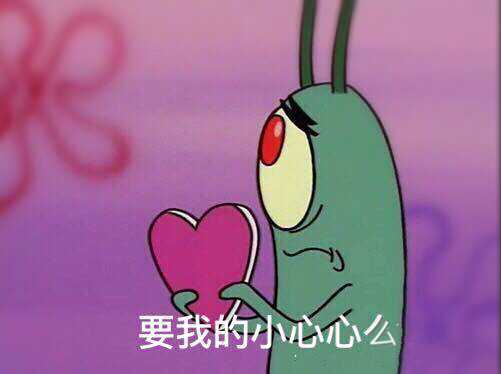
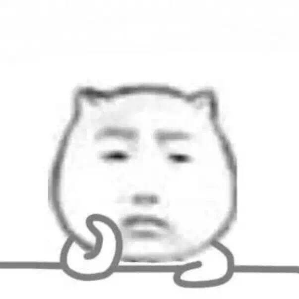
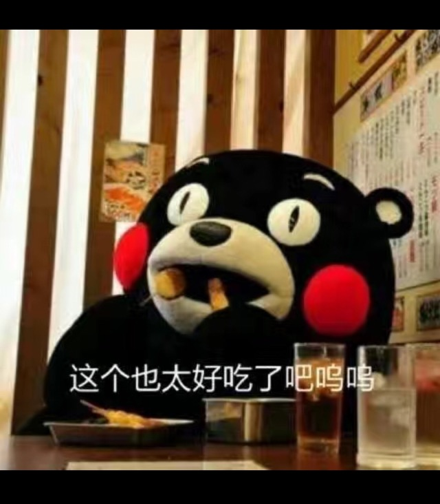
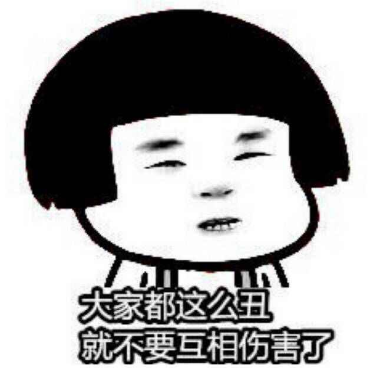
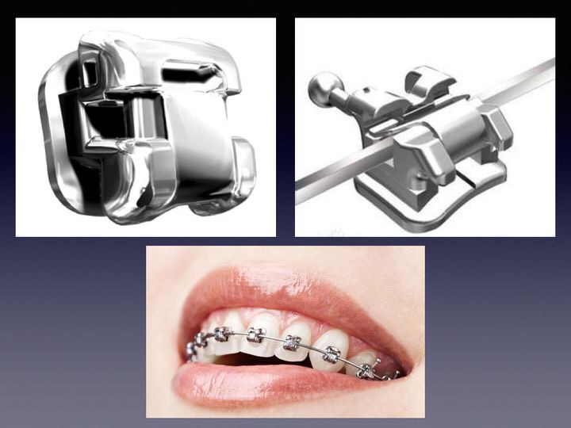
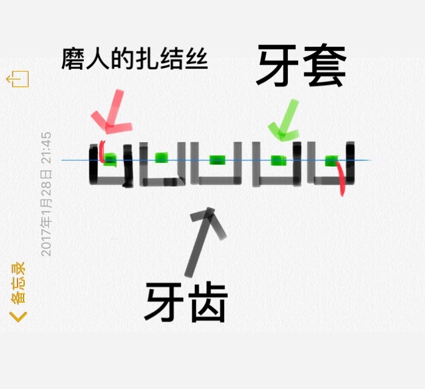
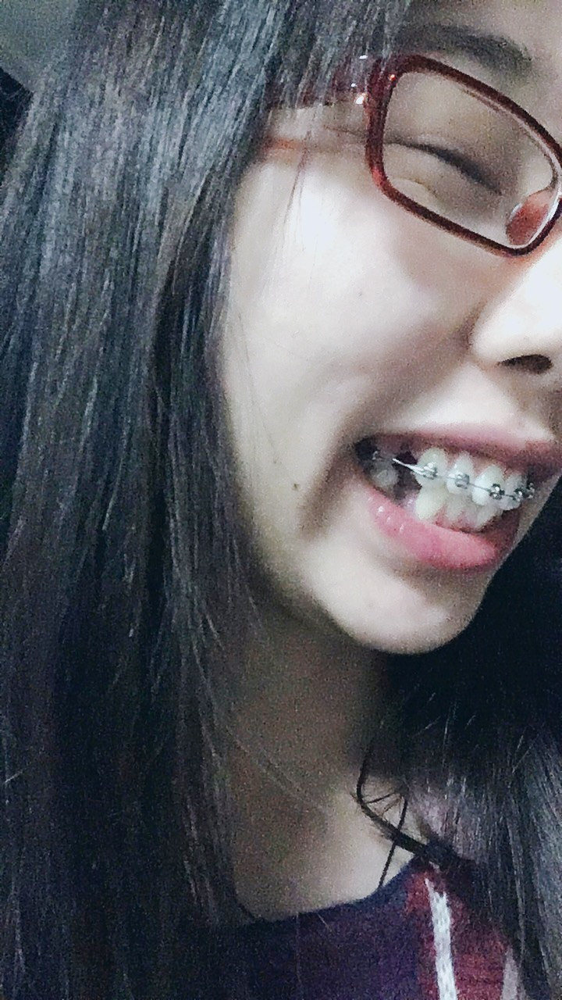

正文: 94年！马上23周岁来强答一拨！
其实一直想整牙，爸妈一直不同意，主要是觉得没必要，还挺贵的，牙也不是很丑。
今年暑假我舅妈来我家，我说了我想整牙的事，我舅妈一看，这得整啊，我舅妈是我认识的人中很聪明的那类人，懂得说话的技巧，而且自身也是医生，分分钟说服了我爸妈。给舅妈比心！然后给我推荐了我们这一所公立牙科医院的医生。
国庆去拍片定方案，因为我在外地上学（受限于中科院坑爹的代培政策，所以我就选择在家整牙了，所以是异地整牙）。我的主治医生就建议我寒假再开始做。
所以这次一放假就联系了医生。拔了4颗4号牙，还有两颗智齿矫过程中拔（一颗还是水平阻生，一直没疼过，要不是这次整牙我都不知道我智齿长成了这鬼样）。
关于拔牙我个人不抗拒，一贯态度：医生让拔就拔，医生说啥就是啥，都听医生的。毕竟术业有专攻，什么以后牙会松动啊什么的，既然医生说不会我就不担心，为什么不信医生的话非得去信你亲戚邻居的道听途说呢，他们能比医生更懂吗？他们还天天转朋友圈鸡汤文呢还信手机有辐射呢。。。不过介于父母的生长环境我觉得他们的“迂腐”也是可以原谅的，默默地为因为父母不同意而不正畸的孩子们掬一把同情泪，等经济独立了再去做吧！至于那些和我年纪差不多的，担心拔牙以后会牙松的同学我可就不能理解了，作为新时代的少年还没个获取正确信息的能力？

拔牙个人觉得疼不疼看医生技术，我拔右侧时就疼的后半夜才睡着，之后持续疼了2天，一个礼拜后咀嚼时还疼，拔左侧时换了个医生，然后拔完回家立马冰敷，麻药消了也基本无痛感，睡觉的时候稍微有点疼，但是很快睡着了，第二天起来一点也不疼了！！生龙活虎！

选的钢丝自锁，今天2017-1-20上午去上的牙套，只上了半口，剩下半口医生说三个月后再上。半个小时多一点就粘好了，目前稍微有点酸胀感，但是基本可以忽略，可能是时间有点短才带了2小时，估计得3-5小时才开始比较疼？吃饭的时候确实容易黏牙套上！诡异的感觉！
目前距离我带上牙套已经7个小时啦！只要不咀嚼东西基本没啥感觉！吃饭的时候我终于感受到医生只做了半口的用意，感谢医生给我留了下牙来啃啃东西！
比较不能适应的就是现在不能吃小零食了嘤嘤嘤吃完就得刷牙对于我这个在家零食不离嘴的真是莫大的考验！
嗯？美观程度？当然很丑啦！
2017年1月28日更新
带牙套一个礼拜啦！首先祝大家新年快乐！带牙套过年呢对我来说基本没影响，该胖还是胖。这春节才开个头我就胖了3斤了。从这个数据也可以看出牙套对我的影响确实不大。带完牙套其实主要的影响是你没法咬断食物，不过只要能塞进嘴里你就能通过后牙的咬合面嚼碎。比如排骨什么的，我都是手动把肉撕下来然后再吃！作死少女尝试了很多不能吃的东西，每次吃完我都心有余悸痛哭流涕，还好托槽没掉，下次再也不吃了！然而下次。。
不够这两天确实也出现了磨腮帮子的现象。我用的是钢丝自锁牙套，长这样：
不是说自锁就一定没有扎结丝，我的还是有的，用我的灵魂画技给大家展示一下：

我画的是半侧，从图中可以看出还是有两个扎结丝，我也不造是我吃多了还是刷牙的原因，靠近腮帮子的扎结丝会磨口腔。或者你很久没说话了，开始说话时你会感受到扎结丝从你的肉里拔出来的感觉。会不会发展成溃疡我还不造，不过我不是容易得口腔溃疡的体质。印象中只得过一次溃疡，是在我连吃了3天火锅后因为上火所以得的。目前还可以忍受，不过我还是去买了正畸保护蜡，遗憾的是目前是假期，我还需要几天才可以拿到我的蜡。
最后不要脸的上一张渣像素前置磨皮过度的自拍牙套图。

从照片可以看出我拔完牙留下的黑洞洞。其实我的牙这么看也不是很突对吧！我主要是骨性的问题，骨头突，医生其实建议我考虑正颌，我觉得太疼了所以不想做。我这应该属于掩饰性正畸，医生跟我说，很多人做完效果特别好，像AB这种对比的也有，但是她们是牙性，所以做完效果特别好。但是我是骨性的，做完后牙会进去骨头还是突的，效果不会那么明显，不过肯定比现在好看。她建议我整完牙去做个颏成型或者垫个下巴就会很好看了。
在这里也提醒骨性突出的小伙伴，如果你要做正颌，那你得去做术前正畸哦！如果你去做普通的整牙就不能再做正颌了，只能做颏成型！所以做之前要考虑清楚呀！